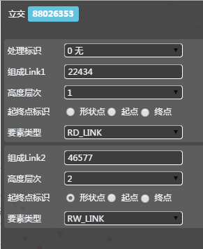
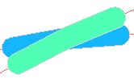
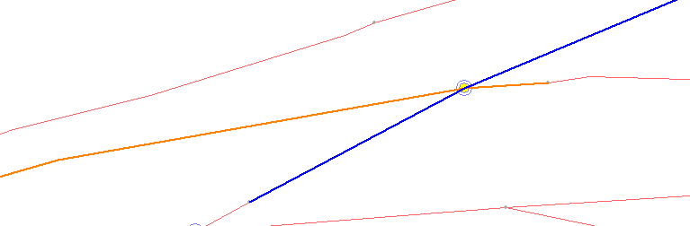

保存
更新数据

选择"关系"
单击地图上
立交ICON
map高亮展示
整条组成link
取消
放弃编辑结果


鼠标单击图标中Link调整上下层关系
ESC

立交编辑

操作步骤
1） 用户选择“新增关系”按钮，再选择二级选项中的 “立交”按钮变成浅黄色，同时地图中提示用户框选“立交点位”；
2） 框选多条Link之间的交汇处；
3） 系统将计算存在交汇关系的空间位置关系，随机确定上下关系，并以不同颜色高亮显示；
4） 作业员根据实际情况判断Link的高低关系，左键点击Link；
5） 系统将被点击的Link置上；
6） 作业员按空格键，结束本次操作；
7） 系统高亮显示交汇节点，并记录本次操作，在属性列表中把空间位置在上的Link的“高度层次”属性设置为1，在下的设置为0，以此类推，立交关系创建完毕；
取消操作:
8） 如果未选中link交汇处，则通过直接捕捉link上的形状点来制作特殊立交；
9） 如果作业员同时选择多个交汇点，系统会在交汇点处显示一个红色的十字，并在其中一个交汇点处显示“制作这个点”的提示信息，作业员根据实际情况点击其中一个制作立交关系；
10） 如果作业员想终止创建立交关系，按Esc键；
11） 如果作业员不想保存创建的立交关系，按Esc键取消；
实时控制
1、实时检查：只允许选择道路与道路、道路与铁路、铁路与铁路、道路与土地覆盖、道路与市街图、铁路与土地覆盖、市街图与土地覆盖、市街图与铁路之间的link制作立交；其中，道路与铁路、道路与土地覆盖、道路与市街图、铁路与土地覆盖、市街图与土地覆盖、市街图与铁路中，每个要素可以有多根link参与，并且属于土地覆盖、市街图中同要素的多根link必须首尾挂接，属于同一层，创建的立交点在挂接的node处；
2、实时控制：已有立交的地方，不可以再次制作立交；如果需要制作，可以先删除原始立交，然后重新制作。
3、后检查：任何link与隧道属性的RDlink创建立交后，隧道属性的RDlink的高度层次最小；
4、前检查：特殊立交只能做到道路link上；
5、前检查，制作Gsc时，如果没有选中立交的要素，不允许提交


操作说明:
1、点击选择关系按钮，在地图上点击立交图标；
2、选中立交，系统高亮显示该立交及其立交参与线；
3、点击地图上图标Link触发编辑，可以对立交的高度层次进行修改；
取消动作：
1、用户要放弃本次操作可按Esc撤销；
2、点击其他功能按钮，可退出当前选择
业务规则:
1、选中立交，属性栏显示信息，可修改立交的"处理标识"字段属性,；
2、其他字段置灰不允许编辑；